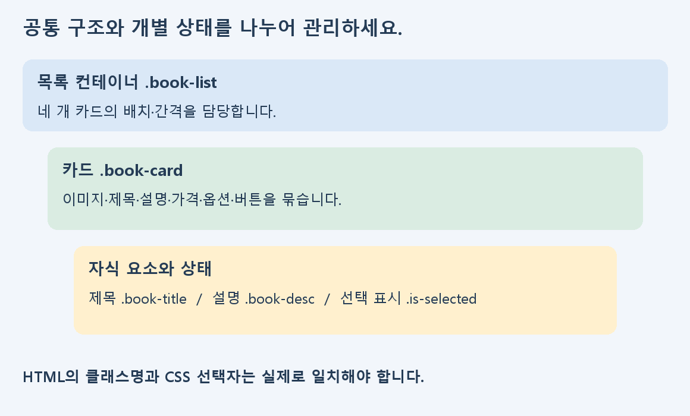

구현 | A그룹 지원자료
1. 학습 목표와 점검할 순서
화면을 구현했다면 이제는 역할이 명확한 구조와 반복 가능한 스타일, 좁은 화면에서의 안정성을 점검하세요. 기존 결과물을 전부 바꾸기보다 실제 피드백에 나타난 항목부터 보완합니다.
- 과제에서 지정한 섹션명·콘텐츠와 구현의 대응을 확인합니다.
- 공통 카드와 개별 상태를 구분해 중복 규칙을 정리합니다.
- 고정 너비·큰 좌우 패딩과 클릭 요소를 점검합니다.
- 같은 조건에서 수정 전후를 확인하고 전달 기록을 남깁니다.
| 순서 | 권장 시간 |
|---|
| 피드백·참고강의 확인 | 25분 |
| 구조와 공통 스타일 점검 | 40분 |
| 너비·상태·초점 보완 | 45분 |
| 수정 전후·전달 기록 | 30분 |
학습 범위는 HTML·CSS 구현 보완입니다. 예제는 교육용 도서 카드이며 평가 정답이 아닙니다. 원래 과제의 클래스명·문구·수치는 실제 명세를 대조하세요.
구현 | A그룹 지원자료
2. 연습 파일과 수정 전후 화면
먼저 압축을 해제한 다음 단계 폴더의 index.html을 여세요. HTML의 link 경로와 실제 CSS 파일명, 대소문자를 대조합니다. 파일을 저장한 뒤 새로고침하고 현재 보고 있는 페이지가 수정한 파일인지 확인하세요.
<link rel="stylesheet" href="./style.css" />
수정 전: 오류를 포함한 독립 연습 예제

수정 후: 같은 예제를 점검하고 정리한 화면

01_before는 의도한 오류가 포함된 파일이고 02_after는 그 예제의 수정 비교용 파일입니다. 평가 모범답안이나 학생 제출물에서 가져온 코드가 아닙니다.
관찰할 것: 화면 밖으로 나가는 너비, 제목 옆 링크, 설명 선택자, 선택 표시, 버튼 태그가 수정 후 어떻게 달라지는지 확인하세요.
구현 | A그룹 지원자료
3. 의미 있는 구조와 공통 카드

카드 내부 요소를 같은 article 안에 묶고, 목록 컨테이너는 카드들의 배치를 담당하도록 구분하세요. 태그는 실제 콘텐츠 역할에 맞게 선택하며 과제에서 요구한 기본 영역과도 대조합니다.
<div class="book-list">
<article class="book-card">
<img class="book-cover" src="../images/book-01.svg" alt="도서 표지" />
<h2 class="book-title">작은 기록의 시작</h2>
<p class="book-desc">설명</p>
<button type="button" class="practice-button">태그 연습</button>
</article>
</div>
실습: 자신의 카드 한 개를 선택해 부모·자식 역할을 표시하고 같은 구조가 네 번 반복되는지 점검하세요. 주석에는 “큰 상자”보다 영역의 실제 역할을 적습니다.
구현 | A그룹 지원자료
4. 공통 스타일과 상태 분리하기
카드마다 거의 같은 CSS를 복제하면 간격을 고칠 때 여러 곳을 바꿔야 합니다. 공통 구조에는 같은 클래스를 쓰고, 선택 상태처럼 다른 의미가 있는 곳에만 별도 클래스를 추가하세요.
.book-card {
display: flex;
flex-direction: column;
}
.book-options { display: flex; gap: 8px; }
.is-selected {
font-weight: 700;
text-decoration: underline;
}
| 점검 | 확인 기준 |
|---|
| 부모와 자식 클래스 | 서로 다른 역할이 의도치 않게 같은 규칙을 받지 않는가? |
| 반복 카드 | 공통 여백·테두리를 한 규칙으로 관리하는가? |
| 상태 표시 | 선택 항목에만 강조가 적용되는가? |
실습: 중복된 규칙 한 묶음을 정리한 뒤 네 카드가 모두 같은 기준으로 표시되는지 확인하세요. 이 예제의 선택 표시는 정적인 스타일 연습이며 상태 변경 동작은 연결하지 않았습니다.
구현 | A그룹 지원자료
5. 고정 너비와 박스 모델 점검하기
width를 크게 고정하거나 버튼 좌우 패딩을 크게 잡으면 좁은 화면에서 넘칠 수 있습니다. 먼저 실제 사용 가능한 너비와 padding·border가 차지하는 공간을 확인하세요.
/* 연습 예제의 수정 방향 */
* { box-sizing: border-box; }
.practice-section {
max-width: 1120px;
margin: 0 auto;
padding: 36px 24px;
}
.practice-button { width: 100%; padding: 12px 16px; }
위 값은 예제의 설계값입니다. 모든 프로젝트에서 고정 크기가 잘못인 것은 아닙니다. 원본 시안과 매체 조건에 맞는 값을 선택하고 실제로 가로 잘림이 발생하는지 확인하세요.
실습: 01_before의 고정 너비를 찾고 02_after와 비교하세요. 자신의 코드에서도 큰 width·height·좌우 padding이 필요한 이유를 설명할 수 있는지 확인합니다.
구현 | A그룹 지원자료
6. Flex 배치와 내용 길이 검토하기
Flex는 부모에 적용하며 직접 자식이 Flex 아이템이 됩니다. 카드 네 개의 너비와 gap 세 개의 합이 컨테이너를 넘지 않는지 확인하세요. 제목이 길어져도 카드 내부 정보가 겹치지 않아야 합니다.
.book-list { display: flex; flex-wrap: wrap; gap: 24px; }
.book-card {
flex: 1 1 calc((100% - 72px) / 4);
min-width: 0;
}
.book-meta { margin-top: auto; }
연습 파일은 좁은 화면에서 두 열·한 열로 바뀝니다. 이 규칙은 예제 검토용이며 원래 평가의 추가 채점 조건이 아닙니다. 화면 너비를 바꾸어 선택한 규칙이 실제 콘텐츠에 맞는지 살펴보세요.
실습: 제목이 긴 카드와 짧은 카드의 하단 정보를 비교하고, 카드·버튼이 가로로 넘치거나 글자가 가려지는지 확인하세요.
구현 | A그룹 지원자료
7. 버튼과 키보드 초점 확인하기
페이지 이동에는 링크, 실행할 동작에는 button을 사용합니다. 클릭 가능한 모양만 만든 div는 button과 같은 기본 키보드 동작을 자동으로 갖지 않습니다. 실제 요구한 행동에 맞는 요소를 선택하세요.
<button type="button" class="practice-button">태그 연습</button>
.practice-button:focus-visible {
outline: 3px solid #c45918;
outline-offset: 3px;
}
예제 버튼은 태그·표시·초점 연습용이며 구매 기능을 제공하지 않습니다. 이 자료의 키보드 점검은 Tab으로 버튼까지 이동하고 초점이 보이는지 확인하는 범위입니다.
실습: 기존 코드에서 행동을 담당하는 요소를 찾고 태그와 초점 표시를 확인하세요. 태그를 바꾼 뒤 기존 스타일이 계속 적용되는지도 다시 확인합니다.
구현 | A그룹 지원자료
8. 검토와 전달 기록 작성하기
수정 내용을 다른 사람이 확인할 수 있도록 증상·위치·변경·재확인 조건을 함께 적으세요. 원래 과제의 고정 명칭과 자유롭게 정리할 수 있는 역할 이름을 구분합니다.
| 기록할 항목 | 작성 예시의 형태 |
|---|
| 증상·위치 | 어떤 화면·요소에서 무엇이 보였는지 |
| 원인·변경 | 어느 파일의 어떤 선택자·태그를 바꾸었는지 |
| 재확인 | 같은 너비에서 무엇이 달라졌는지 |
| 남은 질문 | 확인하지 못한 조건이나 다음 작업 |
실습: 자신의 수정 두 가지를 기록하세요. 실제 확인하지 않은 브라우저나 동작은 통과로 적지 않습니다. 협업 대화를 만들지 말고 실제 검토 의견 또는 제공 시나리오를 구분해 사용하세요.
구현 | A그룹 지원자료
9. 국내 무료 강의로 보완하기
국내 무료 공개강의인 생활코딩의 한국어 설명과 영상을 활용합니다. 아래 링크는 해당 학습 주제로 바로 연결됩니다. 각 강의를 전부 듣기보다 자신의 보완 항목부터 선택하세요.
1. 생활코딩 · 문서의 구조와 슈퍼스타들
강의·예제 열기
HTML 문서의 기본 구조를 확인하고 자신의 태그 포함 관계와 비교하세요.
학습 후 할 일: 기본 구조의 역할과 기존 콘텐츠 대응을 검토하세요.
2. 생활코딩 · 박스모델
강의·예제 열기
내용·안쪽 여백·테두리·바깥 여백을 구분하고 개발자 도구의 실제 크기와 연결하세요.
학습 후 할 일: 고정 너비와 큰 패딩을 적용한 부분의 실제 크기를 비교하세요.
3. 생활코딩 · 부모 자식 선택자
강의·예제 열기
부모와 자식의 관계를 확인하고 선택자가 실제로 어느 요소를 가리키는지 표시하세요.
학습 후 할 일: 공통 클래스와 상태 클래스가 가리키는 요소를 표시하세요.
4. 생활코딩 · Flex
강의·예제 열기
“flex의 기본”을 먼저 보고 컨테이너와 아이템을 구분하세요. 필요하면 grow·shrink 부분으로 이어갑니다.
학습 후 할 일: 카드 너비·간격·줄바꿈 규칙을 설명하고 필요하면 shrink를 추가 학습하세요.
영상에서 보여주는 값은 설명용 예시입니다. 현재 과제의 고정 클래스명·문구·간격 등은 원래 과제 명세를 대조하세요. 글과 함께 제공되는 영상은 무료 공개 콘텐츠이며 시청 구간은 위 주제명을 기준으로 선택할 수 있습니다.
구현 | A그룹 지원자료
10. 최종 자기점검과 다음 학습
| 점검 항목 | 완료 기준 |
|---|
| 파일 연결 | HTML·CSS·이미지 위치와 실제 파일명이 일치합니다. |
| 구조·콘텐츠 | 네 카드의 필요한 내용이 같은 카드 안에 있습니다. |
| 선택자 | HTML의 class와 CSS 이름이 일치합니다. |
| 레이아웃 | 기준 화면의 정렬·간격과 가로 잘림을 확인했습니다. |
| 문구·상태 | 제목·가격·옵션을 원본과 대조했습니다. |
| 수정 재확인 | 무엇을 왜 바꿨는지 같은 조건에서 설명할 수 있습니다. |
- □ 연습 예제와 원래 평가의 지정값을 구분했습니다.
- □ 수정한 파일을 저장하고 실제 브라우저에서 확인했습니다.
- □ 확인하지 않은 기능이나 환경을 통과로 적지 않았습니다.
- □ 어려운 부분을 파일·요소·화면과 함께 질문으로 남겼습니다.
첨부 실습 양식에 증상·원인·수정·재확인 결과를 적으세요. 실습용 도서와 가격은 가상 정보입니다. 새 프레임워크나 서버를 추가하기보다 현재 HTML·CSS의 관계를 이해하고 보완합니다.
다음 학습: 공통 구조와 상태를 일관되게 관리하고, 실제 검토 의견을 받아 수정 이유와 결과를 전달하는 연습으로 이어가세요.